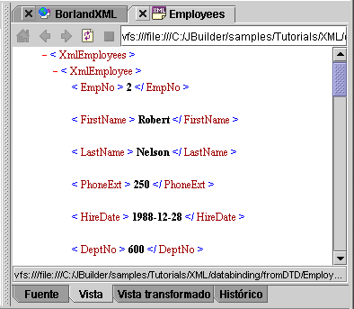

JBuilder proporciona varias funciones e incorpora diversas herramientas para el desarrollo de aplicaciones mediante XML (Extensible Markup Language). Se trata de un método independiente de estructuración de información que separa el contenido del documento de su estructura. XML se puede utilizar para intercambiar datos entre bases de datos y programas Java. Las funciones de compatibilidad de XML varían según la edición de JBuilder.
Éstas son algunas de las funciones de XML:
Son funciones de JBuilder Developer y Enterprise.
Son funciones de JBuilder Enterprise.
Para ver un documento XML en JBuilder, ábralo y pulse la pestaña Ver del panel de contenido. Si esta pestaña no está disponible, es necesario activarla en la ficha XML del cuadro de diálogo Opciones del IDE (Herramientas|Opciones del IDE).

Si desea más información, consulte:
Guía del desarrollador de aplicaciones XML: Introducción
Referencia de la biblioteca de componentes DataExpress | Referencia de componentes de base de datos XML: Package com.borland.jbuilder.xml.database.template
Referencia de la biblioteca de componentes DataExpress | Referencia de componentes de base de datos XML: Package com.borland.jbuilder.xml.database.xmldbms
Referencia de la biblioteca de componentes DataExpress | Referencia de componentes de base de datos XML: Package com.borland.jbuilder.xml.database.common